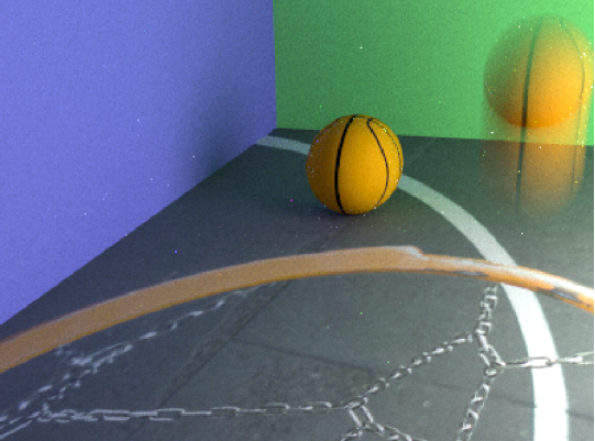
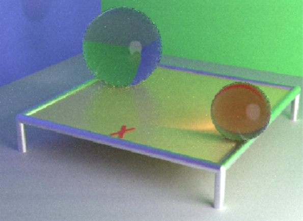
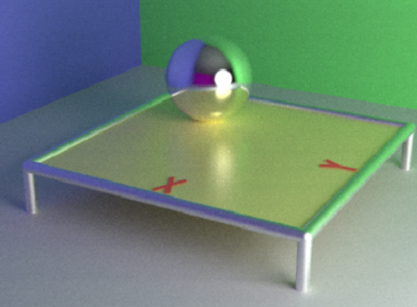

Ray Tracing
- Project Description: 3D Graphic tech demo using raytracing technique - Solo Project
- Tech stack: C++, OpenGL
- Github URL: Project
Link
Developed a cutting-edge graphics demo using ray tracing technology to achieve realistic lighting,
reflections, and shadows
Applied raycating technique with 2D Texture and implementd motion blur effect
Calculated for ray-surfaces intersection of many types of surfaces: explicit, implicit,
procedural and fractal
Calculated lighting using Modern micro-facet BRDFs, reflection, refraction and shadowing
Overcame performance challenges by optimizing the ray tracing code to run efficiently


